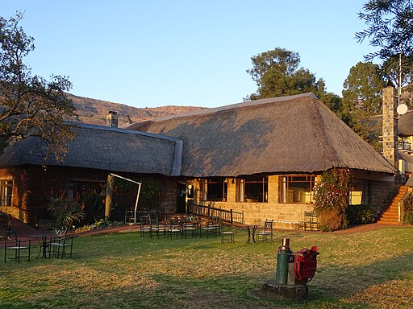

Where to Stay
Taniti has a wide variety of lodging that range from an inexpensive hostel to one large, four-star resort. There are many small, family-owned hotels and a growing number of bed and breakfasts. All types of lodging are strictly regulated and regularly inspected by the Tanitian government.
Bergville_Northern_Drakensberg_The_Cavern_Drakensberg_Resort_&_Spa_08
© Ad Meskens / Wikimedia Commons
CC BY-SA 4.0 https://creativecommons.org/licenses/by-sa/4.0, via Wikimedia Commons